Beyond the Desk
There is more to the picture than a degree.
Accounting is what I am training in, but it is not the whole of my life. I row for the Wits University Boat Club, I run, and I belong to a church community in Bedfordview. These are the things that keep the rest of it upright, and most of what I know about discipline and about working with other people I learned in a boat rather than a lecture theatre.
Rowing
I row for the Wits University Boat Club and serve as its Treasurer. Rowing is the closest thing I know to a genuine team: in an eight there are nine people in the boat, nobody can carry the others and nobody can hide. It has given me early mornings, a squad I would do anything for, and a few races I will be telling stories about for a long time.
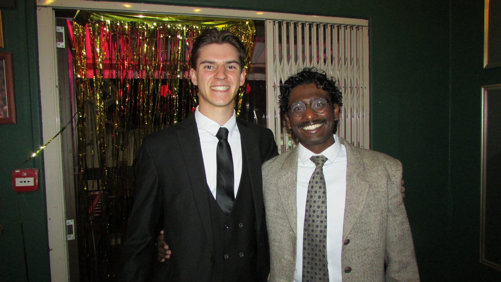
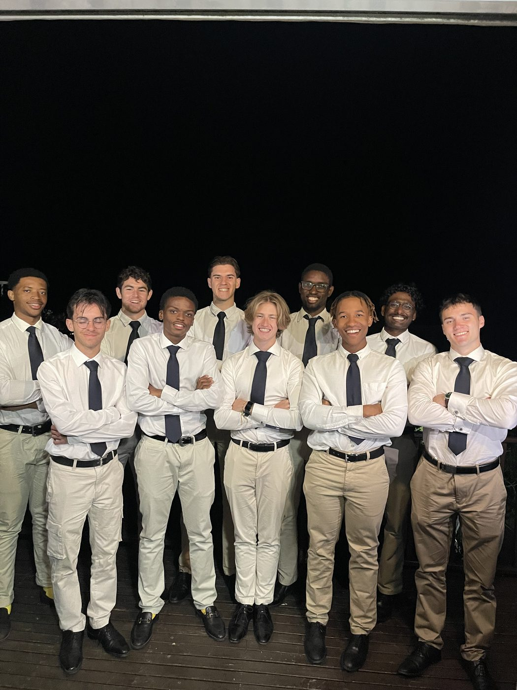
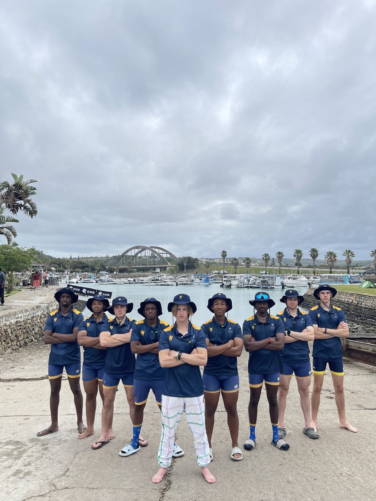
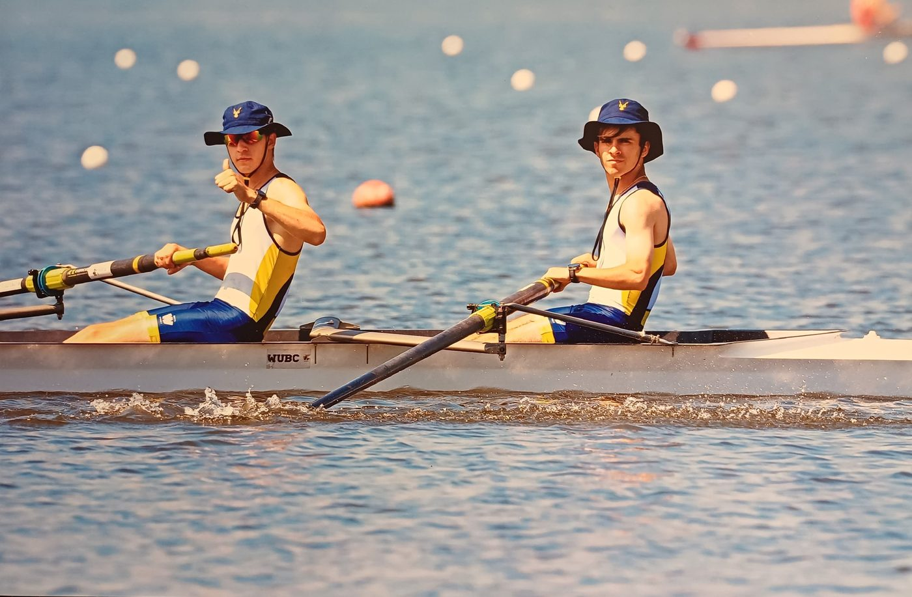
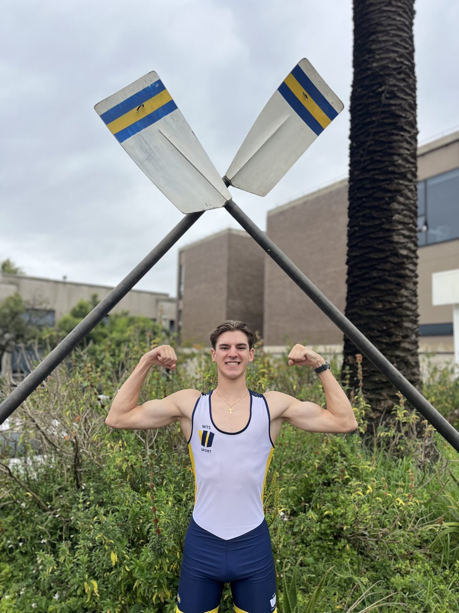
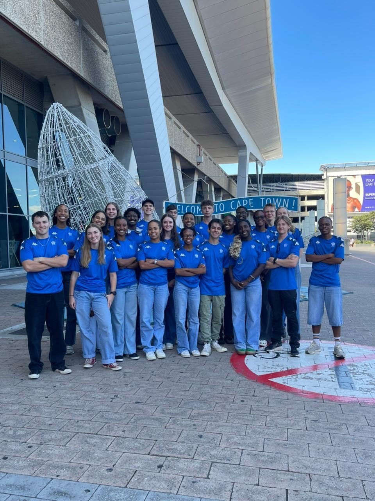
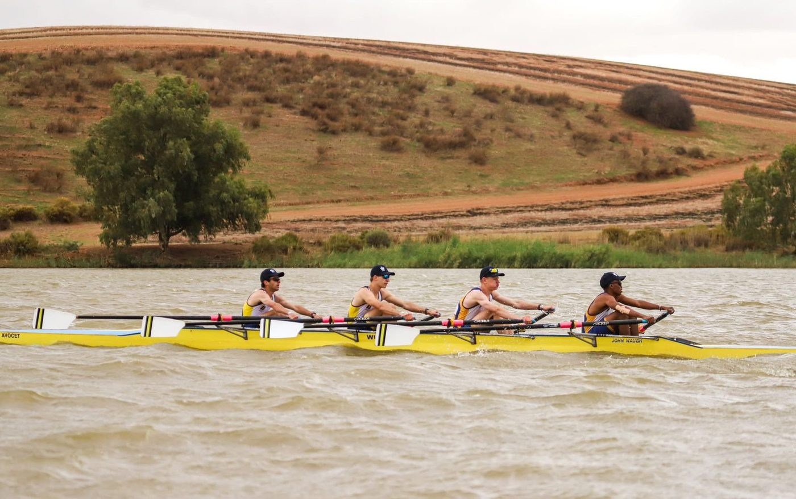
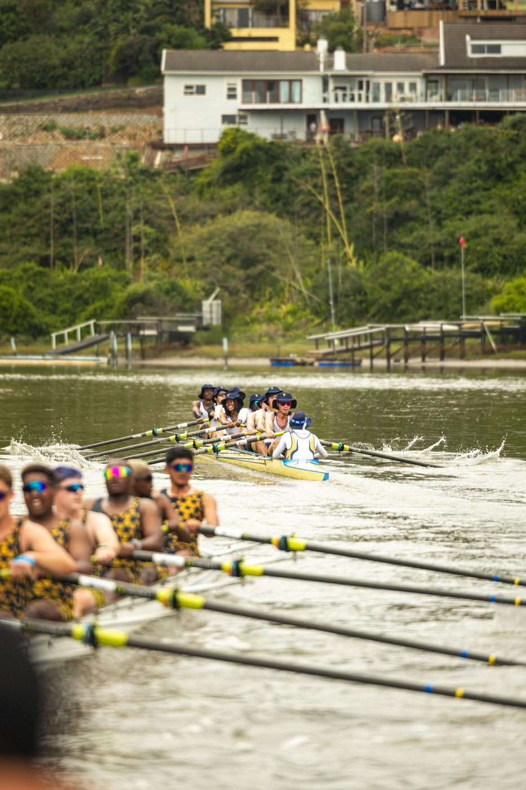
Running
I started running seriously in 2025. My first half marathon came in September of that year, the aQuellé Zone 3 Marathon at Marks Park in Emmarentia, and two months later I finished the African Bank Soweto Marathon, 42.2 kilometres through the streets of Soweto. The People’s Race earns its name, and I was grateful for every kilometre of it.
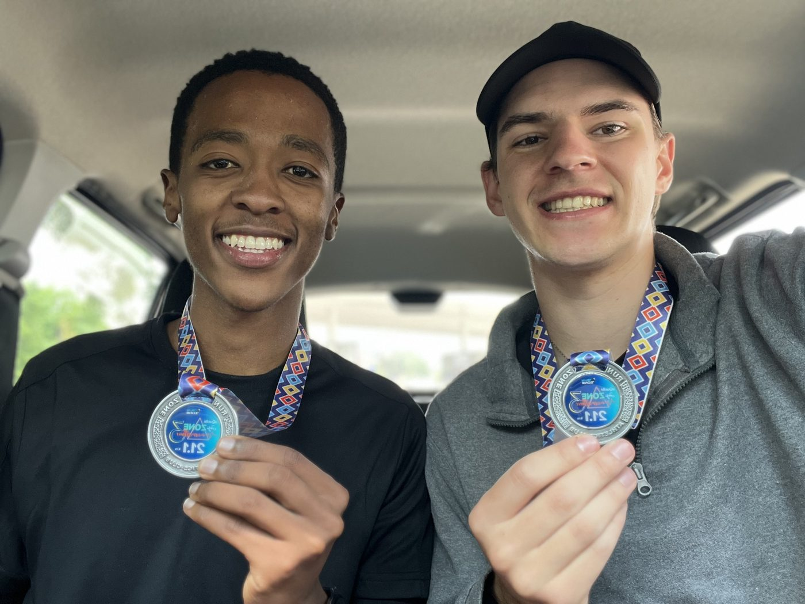
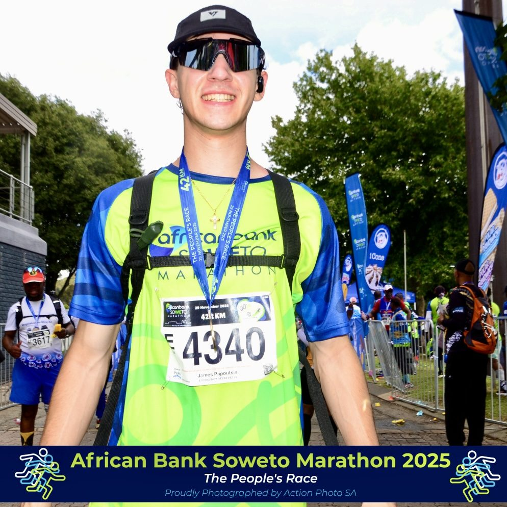
Faith and Community
I first walked into Cornerstone Bedfordview in 2025, the week after I returned from Boat Race, and joined the church properly at the beginning of 2026. I was baptised this year. I am part of a young adults life group and have recently had the chance to lead it, which has been one of the more formative experiences of my year. My faith is the foundation the rest of this page sits on.
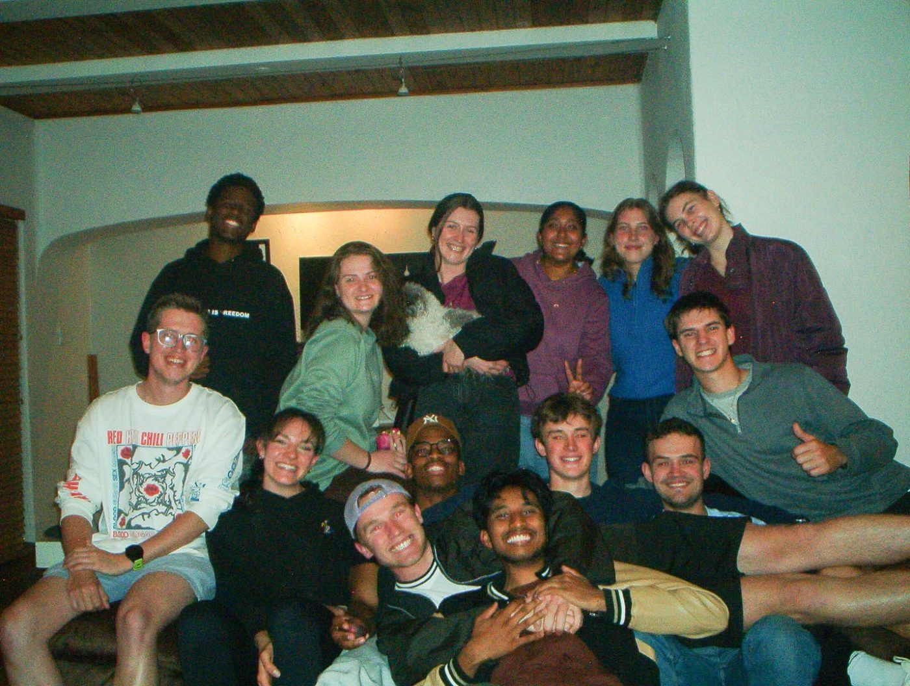